Find a path moving horizontally, vertically, and diagonally that Starts in the lower left and Finishes in the upper right. The path should pass through each white square exactly once, should not pass through any black squares, and should never make a right angle.
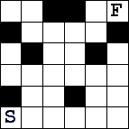
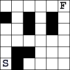
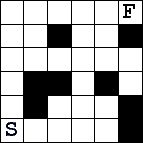
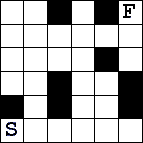
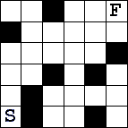
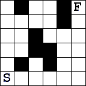
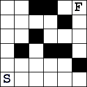
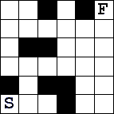
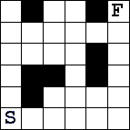
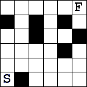
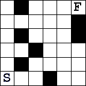
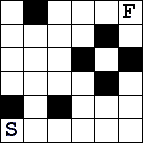
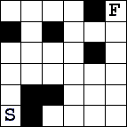
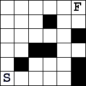
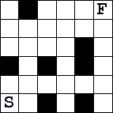
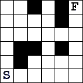
The solutions are here.